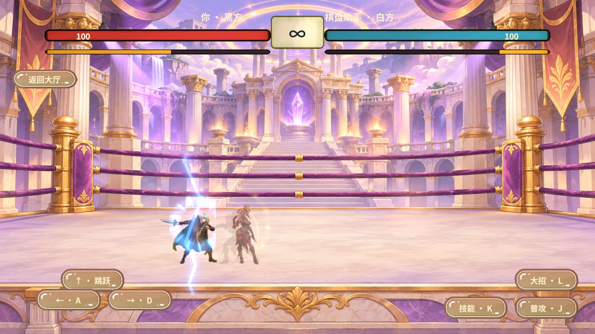
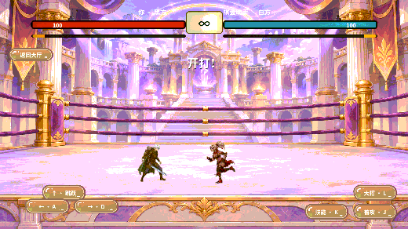

双人决斗帧同步验收
在固定 100 毫秒模拟往返延迟下，5 秒内的权威封帧数从 33 增至 99。两个新客户端各连续执行至第 98 帧，指纹均为 212396121。
根因与实现
原先的权威端等齐两席的下一帧输入才封帧，而客户端拿到本轮回包之后才允许编号下一轮输入。网络等待因此压低实际逻辑帧率，回包驱动的动作采样也会把到包间隔反映到画面。
参考王者 v122 的 CmdQueueSender 输入序号、FrameWindow 连续帧上界与 FrameSynchr 的表现时钟。RevGame 由服务器 Gate 或 LAN 黑方宿主按 50 毫秒固定步长封帧，短时沿用方向，超期回中，跳跃只消费一次。客户端通过独立序号提交意图，按连续游标补帧，再用约 1.5 帧的联机缓冲插值显示。
Revolution 的 RevServices、RevScene、流程与表现状态机承载了场景生命周期及画面接线。联机封帧、输入队列和确定性规则分别归决斗宿主与 C++ GameCore。双端保留相同的原生整帧接口。
本次运行结果
| 环境 | 断言及结果 |
|---|---|
| 固定输入 · C# 与真实原生 DLL | 5 秒、100 毫秒往返条件下封帧数 33 → 99。验证单席静默、方向超期、乱序去重、重新就绪、限量追帧，以及表现时间不越过连续上界。 |
| 真实 KCP · Windows 回环双端 | 白方静默期间 Gate 继续封帧。跳跃只执行一次。两端终局第 118 帧，指纹 1066263649，双方确认 3 个指纹样本后退出。 |
| 真实 UTP · Unity Editor 同机双端 | 白方空棋盘发起决斗，至第 25 帧验证同帧指纹和命中。正常局在第 116 帧对账终局。注入白方错误样本时，两端均报告第 40 帧并停止推进。三轮均清理两端连接。 |
| 真实 HUD · Unity 2022.3.15f1c1 | 多指松手、转向、普攻连段与 Sprite 换帧通过。主线程停顿 200 毫秒，第二次普攻仍在预期第 29 帧开始。检查点恢复与现场逐帧核对 16 帧，最终指纹均为 1915811429。 |
通过同一个 RevMCP stdio 会话执行 rev_discover 发现 Editor、运行期和 GM，使用 rev_call 刷新、核对编译和启动 Play。通过 rev_run 执行三轮 UTP 检查与本地人机 HUD、回放检查，清理夹具并返回大厅。
实际画面


版本和测试范围
联机输入字段沿用原编号，含义改为连接内输入序号。服务器和客户端需配套升级后才能发起新决斗。跨设备、公网丢包、移动端与正式环境尚未实测。现有离线 PvpServiceChecks 夹具缺少 Unity 和分析服务桩，无法编译，本次用 Unity Play、真实 KCP 及原生桥接测试覆盖决斗链路。